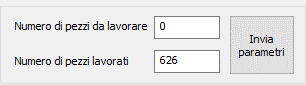

Il numero di pezzi da lavorare viene impostato come contatore cicli della macchina CN. Impostando il Numero di pezzi da lavorare a 0, la macchina effettuare un numero illimitato di cicli, fin quanto il robot sarà in grado di servirla. Valori diversi da 0 comportano un numero di cicli necessario a portare il contatore Numero di pezzi lavorati ad un valore maggiore o uguale a Numero di pezzi da lavorare. In qualsiasi momento è possibile modificare i valori dei contatori e inviarli alla macchina premendo il pulsante Invia parametri